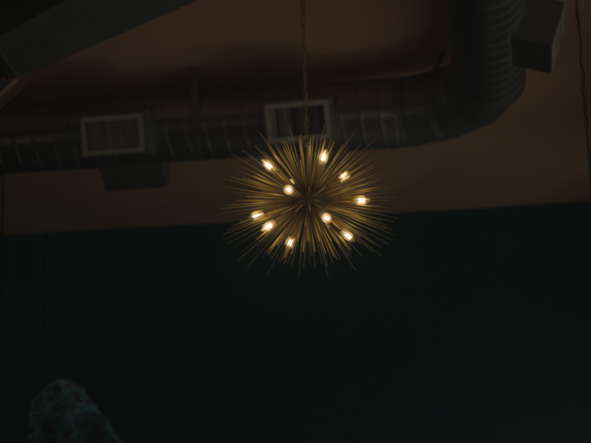
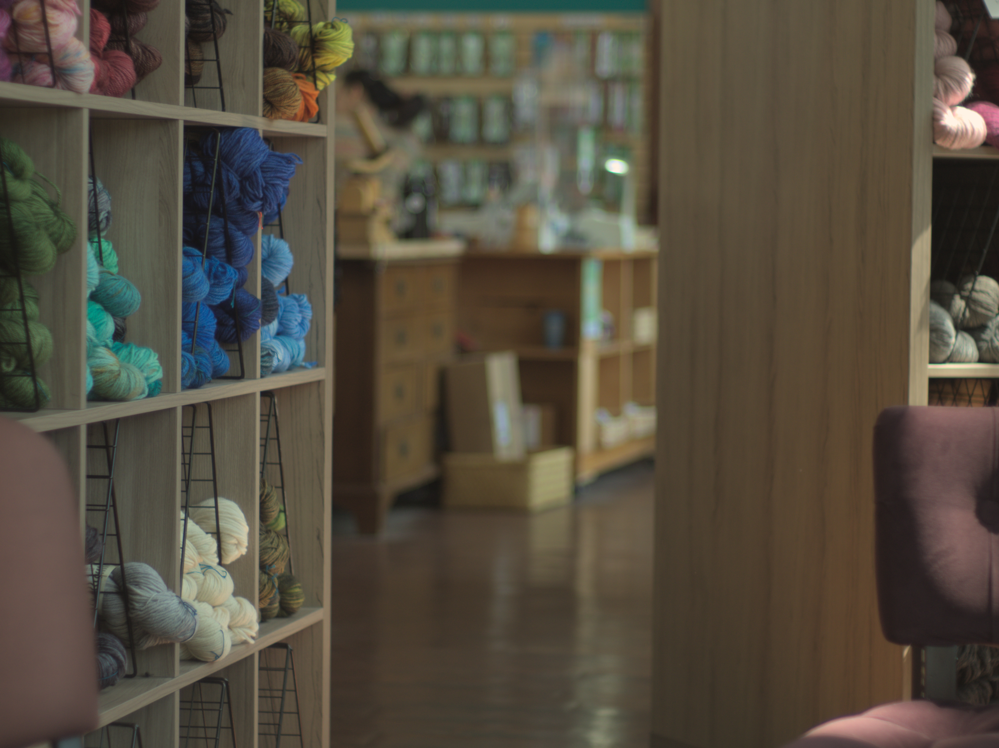
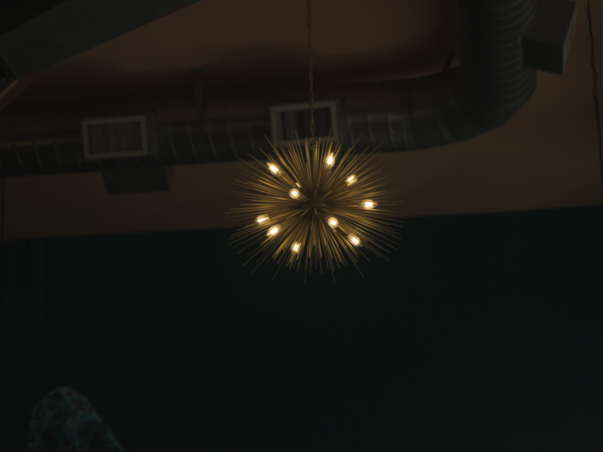
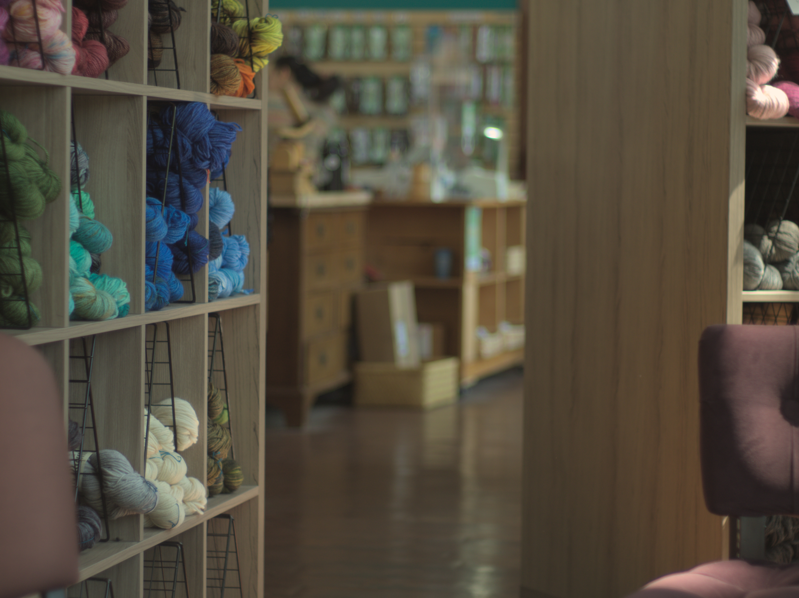
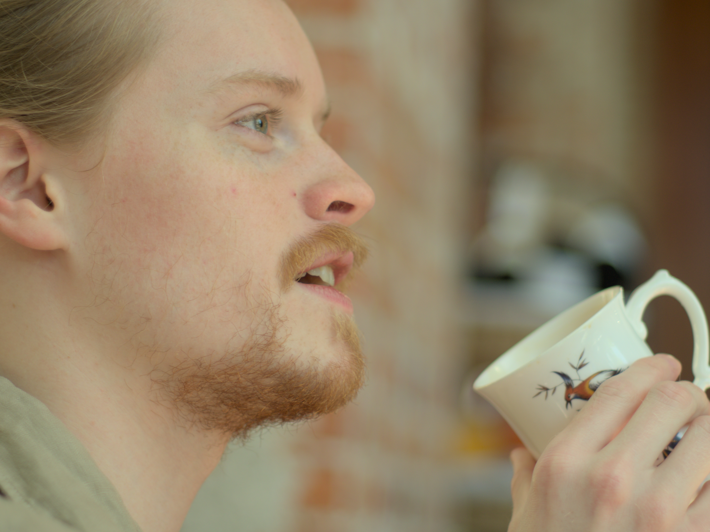
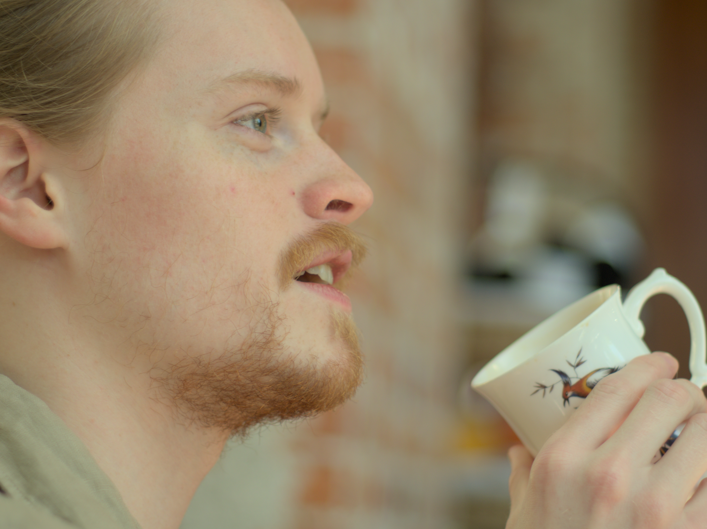

Hello, this is Hannah and Conner. We are from Whatcom County, Washington, coming to you live! Welcome to the blog, where we catalog our events of life, as well as our deepest hopes and dreams. Coming to you live! Stay a while, peruse our emporium of earthly delights!
Today, Conner cleaned the house, and we did not get mochas. Hannah has "Across the Universe" stuck in her head.
Having failed to update the site with images we've taken over the past three months, here's an assortment of those.
There we are, sometime in May, having a blast at our apartment. Speaking of the apartment, here's the way it looked at the time.


For your amusement, note the at the time abandoned duck which Hannah has had since she was a baby.
Drinking cappucinos courtesy of the Shirlee Bird Cafe location situation within the Northwest Yarns and Mercantile in Bellingham. One of our favorite places at the time. Good lighting in there.
 



 


Hannah was getting into Crochet at this point. You'll see one of her creations a little later.
Now, likely sometime in June, at another of our favorite spots, the Aslan Brewery. Note that in none of the images depicting us patronizing a business should we have been doing so. A little known fact: Faust was initially written as an allegory for our financial situation.


What a firecracker!
Yet another business. This time we are at Accomplice, the best burger in Bellingham. She's wearing her newly crocheted "bolero" sweater. Conner was there too, honest!


The 4th of July show with two of Conner's siblings. Limited selection of decent food vendors, kickass live psychedelic rock, and some good fireworks.


Now a grab bag of other tidbits throughout the period.
The duality of woman:


Our sad apartment and then reason we can't afford to improve it:


Check out Conner's sweet glasses. We got those at Value Village, can you believe it?
And lastly, my infamous unnamed cocktail, and aesthetic dishwashing:

The drink - which isn't really a cocktail, Conner just likes to call it one - goes like this:
Cottagecore masochism.